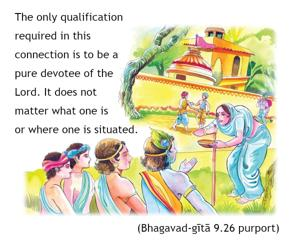

If one offers Me with love and devotion a leaf, a flower, a fruit or water, I will accept it.

For the intelligent person, it is essential to be in Kṛṣṇa consciousness, engaged in the transcendental loving service of the Lord, in order to achieve a permanent, blissful abode for eternal happiness. The process of achieving such a marvelous result is very easy and can be attempted even by the poorest of the poor, without any kind of qualification. The only qualification required in this connection is to be a pure devotee of the Lord. It does not matter what one is or where one is situated. The process is so easy that even a leaf or a little water or fruit can be offered to the Supreme Lord in genuine love and the Lord will be pleased to accept it. No one, therefore, can be barred from Kṛṣṇa consciousness, because it is so easy and universal. Who is such a fool that he does not want to be Kṛṣṇa conscious by this simple method and thus attain the highest perfectional life of eternity, bliss and knowledge? Kṛṣṇa wants only loving service and nothing more. Kṛṣṇa accepts even a little flower from His pure devotee. He does not want any kind of offering from a nondevotee. He is not in need of anything from anyone, because He is self-sufficient, and yet He accepts the offering of His devotee in an exchange of love and affection. To develop Kṛṣṇa consciousness is the highest perfection of life. Bhakti is mentioned twice in this verse in order to declare more emphatically that bhakti, or devotional service, is the only means to approach Kṛṣṇa. No other condition, such as becoming a brāhmaṇa, a learned scholar, a very rich man or a great philosopher, can induce Kṛṣṇa to accept some offering. Without the basic principle of bhakti, nothing can induce the Lord to agree to accept anything from anyone. Bhakti is never causal. The process is eternal. It is direct action in service to the absolute whole.
Here Lord Kṛṣṇa, having established that He is the only enjoyer, the primeval Lord and the real object of all sacrificial offerings, reveals what types of sacrifices He desires to be offered. If one wishes to engage in devotional service to the Supreme in order to be purified and to reach the goal of life – the transcendental loving service of God – then one should find out what the Lord desires of him. One who loves Kṛṣṇa will give Him whatever He wants, and he avoids offering anything which is undesirable or unasked. Thus meat, fish and eggs should not be offered to Kṛṣṇa. If He desired such things as offerings, He would have said so. Instead He clearly requests that a leaf, fruit, flowers and water be given to Him, and He says of this offering, “I will accept it.” Therefore, we should understand that He will not accept meat, fish and eggs. Vegetables, grains, fruits, milk and water are the proper foods for human beings and are prescribed by Lord Kṛṣṇa Himself. Whatever else we eat cannot be offered to Him, since He will not accept it. Thus we cannot be acting on the level of loving devotion if we offer such foods.
In the Third Chapter, verse 13, Śrī Kṛṣṇa explains that only the remains of sacrifice are purified and fit for consumption by those who are seeking advancement in life and release from the clutches of the material entanglement. Those who do not make an offering of their food, He says in the same verse, are eating only sin. In other words, their every mouthful is simply deepening their involvement in the complexities of material nature. But preparing nice, simple vegetable dishes, offering them before the picture or Deity of Lord Kṛṣṇa and bowing down and praying for Him to accept such a humble offering enable one to advance steadily in life, to purify the body, and to create fine brain tissues which will lead to clear thinking. Above all, the offering should be made with an attitude of love. Kṛṣṇa has no need of food, since He already possesses everything that be, yet He will accept the offering of one who desires to please Him in that way. The important element, in preparation, in serving and in offering, is to act with love for Kṛṣṇa.
The impersonalist philosophers, who wish to maintain that the Absolute Truth is without senses, cannot comprehend this verse of Bhagavad-gītā. To them, it is either a metaphor or proof of the mundane character of Kṛṣṇa, the speaker of the Bhagavad-gītā. But, in actuality, Kṛṣṇa, the Supreme Godhead, has senses, and it is stated that His senses are interchangeable; in other words, one sense can perform the function of any other. This is what it means to say that Kṛṣṇa is absolute. Lacking senses, He could hardly be considered full in all opulences. In the Seventh Chapter, Kṛṣṇa has explained that He impregnates the living entities into material nature. This is done by His looking upon material nature. And so in this instance, Kṛṣṇa’s hearing the devotee’s words of love in offering foodstuffs is wholly identical with His eating and actually tasting. This point should be emphasized: because of His absolute position, His hearing is wholly identical with His eating and tasting. Only the devotee, who accepts Kṛṣṇa as He describes Himself, without interpretation, can understand that the Supreme Absolute Truth can eat food and enjoy it.